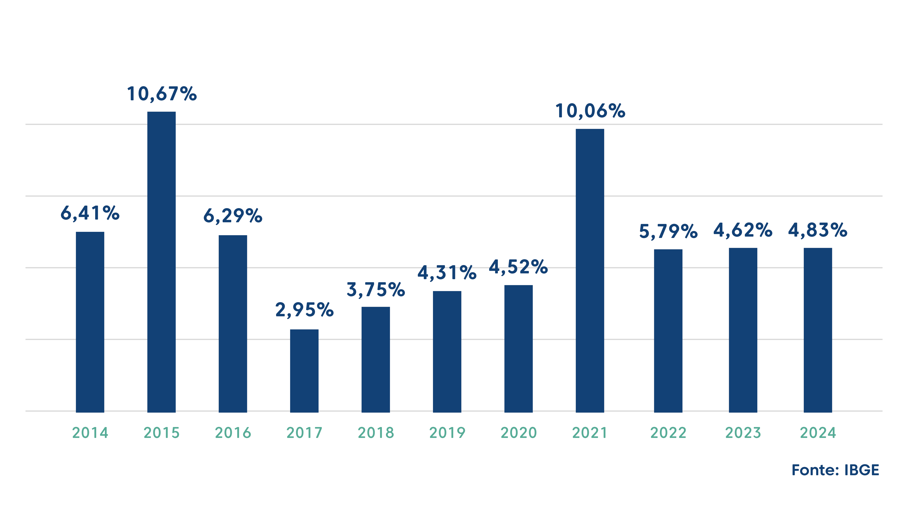
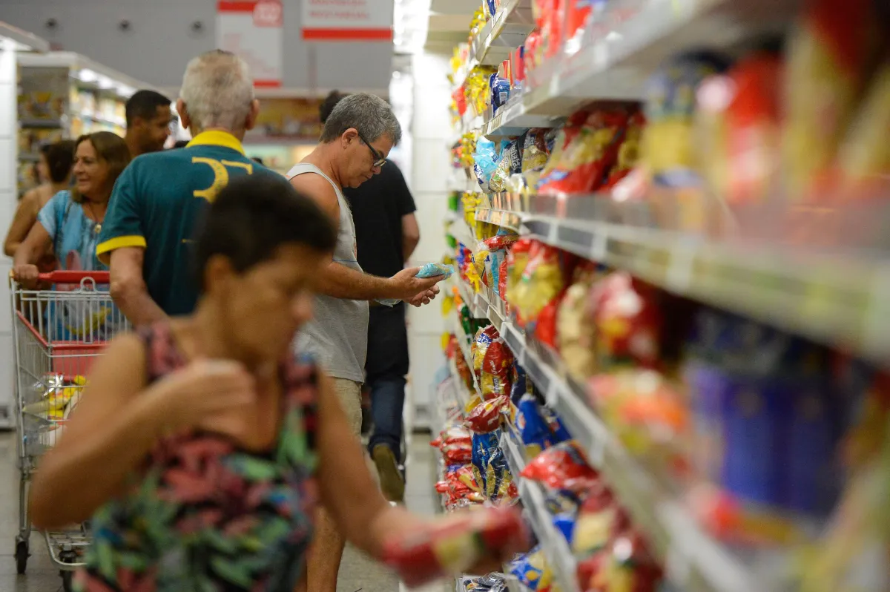

Presidente anuncia pacote de medidas para combater a inflação
Em pronunciamento em rede nacional, o presidente do Brasil anunciou um amplo pacote de medidas econômicas voltadas ao combate da inflação, que vem atingindo níveis elevados e afetando diretamente o custo de vida da população. O plano inclui ações emergenciais e estruturais, com o objetivo de controlar os preços, estimular a produção e preservar o poder de compra dos brasileiros.
A inflação acumulada nos últimos 12 meses ultrapassou a meta oficial do Banco Central, pressionada principalmente pelo aumento no preço dos alimentos, combustíveis e energia elétrica. De acordo com dados do IBGE, famílias de baixa renda são as mais impactadas, já que gastam a maior parte do orçamento em itens básicos. O governo argumenta que o pacote é uma resposta imediata a essa situação crítica.
“Nosso compromisso é com a estabilidade econômica e com a defesa do povo brasileiro. Este pacote de medidas busca devolver previsibilidade ao mercado e, principalmente, garantir que a mesa das famílias esteja cheia, mesmo em tempos de dificuldade.”
— Presidente da República
Medidas emergenciais
Entre as principais ações anunciadas estão:
- Isenção temporária de impostos sobre a cesta básica e medicamentos essenciais.
- Subsídios parciais ao transporte público e combustíveis, buscando frear o repasse de custos para a população.
- Controle emergencial de tarifas de energia elétrica e gás de cozinha, com prioridade para famílias inscritas no Cadastro Único.
- Expansão de programas sociais, com aumento temporário no valor do auxílio a famílias em situação de extrema pobreza.
Segundo o governo, essas medidas devem começar a surtir efeito nos próximos meses, reduzindo a pressão imediata sobre o orçamento das famílias.
“Controlar a inflação é também uma questão de justiça social. Quando o preço do feijão ou da conta de luz sobe, o impacto sobre os mais pobres é devastador. Esse pacote representa um alívio necessário.”
— Ana Carvalho, economista da USP
Estratégias de médio e longo prazo
O pacote não se limita a ações emergenciais. O governo também anunciou iniciativas estruturais, como a ampliação do crédito agrícola subsidiado, investimentos em infraestrutura logística e incentivo à energia renovável. A ideia é reduzir os gargalos que encarecem a produção e o transporte no Brasil, criando condições para preços mais estáveis no futuro.
Outro ponto relevante é a coordenação com o Banco Central. A equipe econômica reforçou a importância de alinhar a política fiscal com a política monetária, garantindo que a redução da inflação não dependa exclusivamente da manutenção de juros elevados, o que poderia comprometer o crescimento econômico.
Reação da sociedade e do mercado
A repercussão do anúncio foi imediata. Organizações de trabalhadores e entidades de defesa do consumidor elogiaram a iniciativa, destacando que ela atende a demandas urgentes da população. No entanto, representantes do setor empresarial mostraram preocupação com os custos fiscais das medidas, especialmente das desonerações e subsídios.
“É preciso cautela. O alívio para a população é bem-vindo, mas se não houver responsabilidade fiscal, os efeitos podem ser temporários e até agravar a situação no futuro.”
— Ricardo Mendes, analista do mercado financeiro
Na política, a oposição acusou o governo de adotar medidas “eleitoreiras” e de curto prazo, enquanto parlamentares da base aliada defenderam o pacote como uma resposta necessária diante da crise inflacionária. A discussão promete dominar o Congresso nas próximas semanas, já que parte das ações depende de aprovação legislativa.
Impacto internacional
A crise inflacionária no Brasil não ocorre de forma isolada. O aumento global dos preços do petróleo, as instabilidades geopolíticas e as mudanças climáticas que afetam a produção agrícola contribuem para a escalada dos preços. O governo ressaltou que, apesar das pressões externas, o país precisa fortalecer mecanismos internos de proteção econômica.
“O Brasil não pode controlar o preço do barril de petróleo no exterior, mas pode investir em alternativas energéticas e reduzir sua dependência de importações. Esse é o caminho para blindar a economia de crises internacionais.”
— Maria Silva, especialista em comércio internacional

Projeções e expectativas
O Ministério da Fazenda projeta que a inflação comece a desacelerar ainda neste semestre, podendo encerrar o ano dentro da meta estipulada pelo Banco Central. Caso isso se confirme, haverá espaço para reduzir gradualmente a taxa de juros, estimulando o consumo e os investimentos.
No entanto, especialistas alertam que o sucesso dependerá da execução eficiente das medidas e da capacidade política do governo em manter apoio no Congresso. A confiança de investidores e consumidores será crucial para que os efeitos se consolidem.
Para a população, a expectativa é clara: que os preços de alimentos, energia e transporte fiquem mais acessíveis. Se o pacote for bem-sucedido, poderá marcar uma virada importante na economia brasileira, abrindo caminho para um crescimento mais estável e inclusivo nos próximos anos.
« Voltar